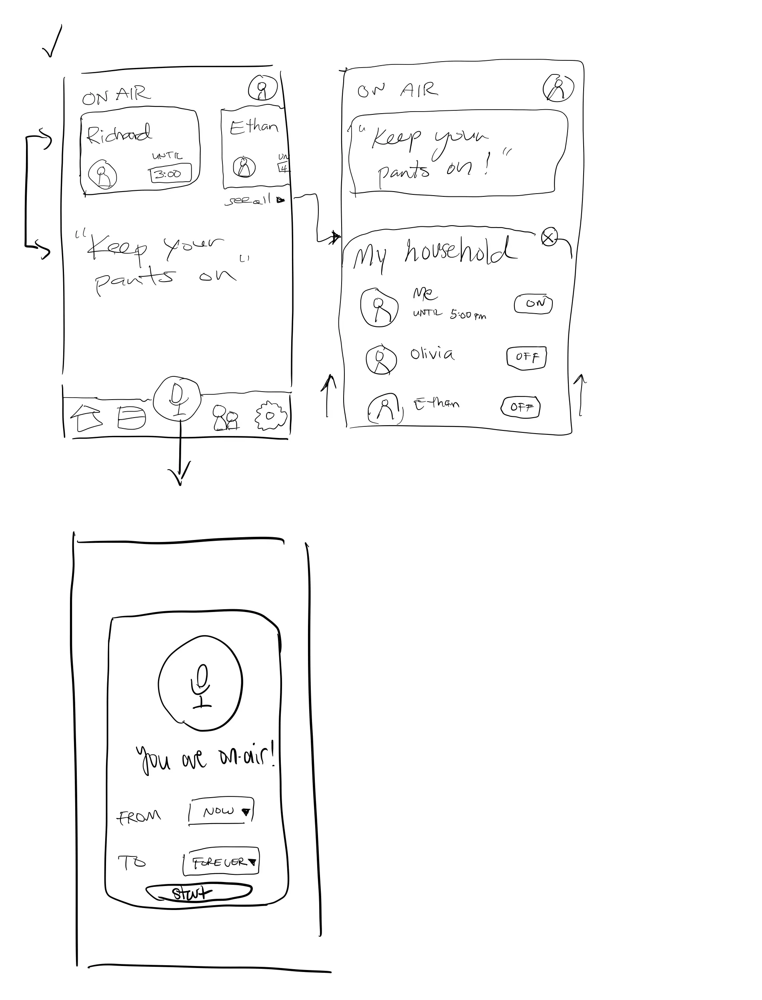
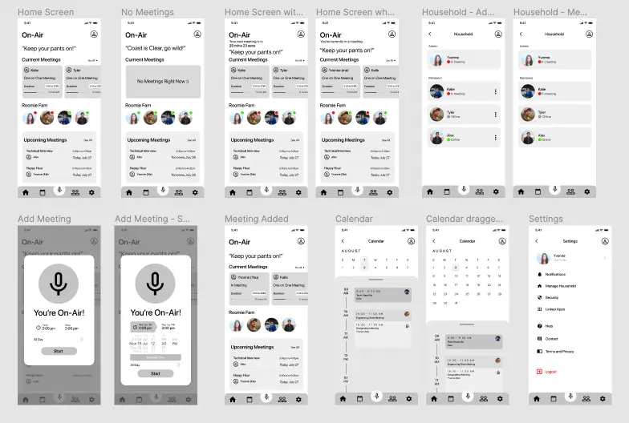
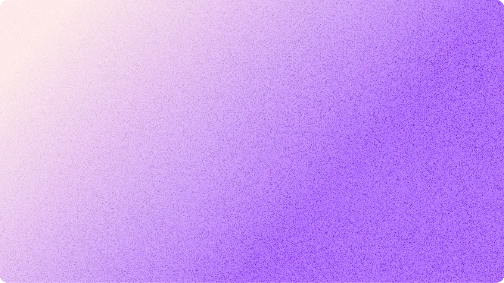
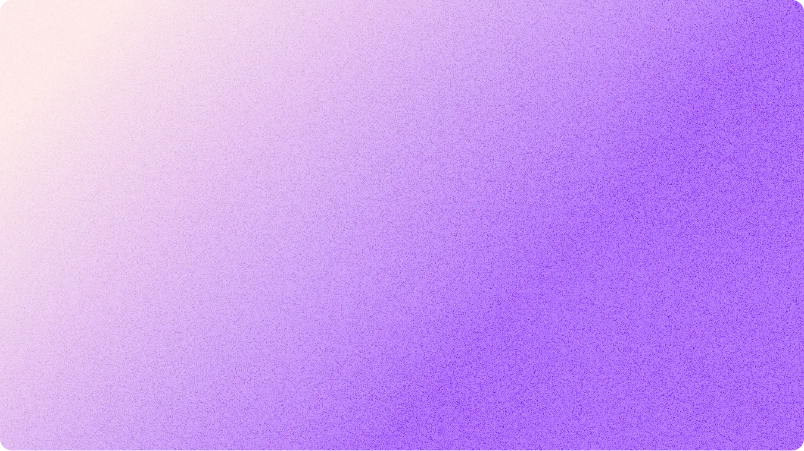

Since the beginning of the COVID-19 pandemic, many people have had to
make the sudden switch over to work from home or distance learning. As
a result, people have to work around their housemates or their
families who may either be in their own meetings, or unaware that they
are causing a disturbance in the background. Sometimes, a workaround
is just to let others know ahead of time, post signs outside your
door, or simply send a message to the household group chat. However,
these solutions are very manual and not always perfect, as people can
often forget to notify their housemates – leaving them unaware.
I've come across some creative ideas that people have come up with to
mitigate these disturbances, for example:
The classic radio “on air” light box is exactly where I got my
inspiration for the theme of this idea – but I wanted to design one
that is more accessible to people and doesn't require hardware. While
a physical device has its own charms, not everybody has the time or
means to purchase or build an actual “On-Air” light box sign.
I want to solve this problem in a generalizable and consistent way,
especially as working from home and remote learning become more and
more widespread and normalized — even after the pandemic. This idea
could also apply to users who do regular streaming on sites like
Twitch, to those who do casual video/audio calling, and even to those
who just don’t want to be disturbed.
Personally, I got most of my inspiration from living with my partner –
who is in meetings often throughout the day as he's been working from
home since the beginning of the pandemic. As a result, I've had
moments where I suddenly forget that he's in a meeting and made loud
distracting sounds (e.g. grinding coffee beans or using the ice
dispenser, as our "home office" is in the same room as the kitchen).
As a user, it would also be nice to have a visual, unobstrusive way to
see if my partner is currently in a meeting, check how long it’s
supposed to run until, and see a schedule without having access to his
calendar. Likewise, for him, it would give him a way to discreetly
tell me that I'm being too loud without having to sneakily message me
on his phone.
Ideation
I started out by sketching a few screens to get an idea of what kind
of flow and layout I wanted for the app. I then moved over to Figma
to create a set of low-fidelity wireframes with some additional
features and screens.


Wireframes

 
